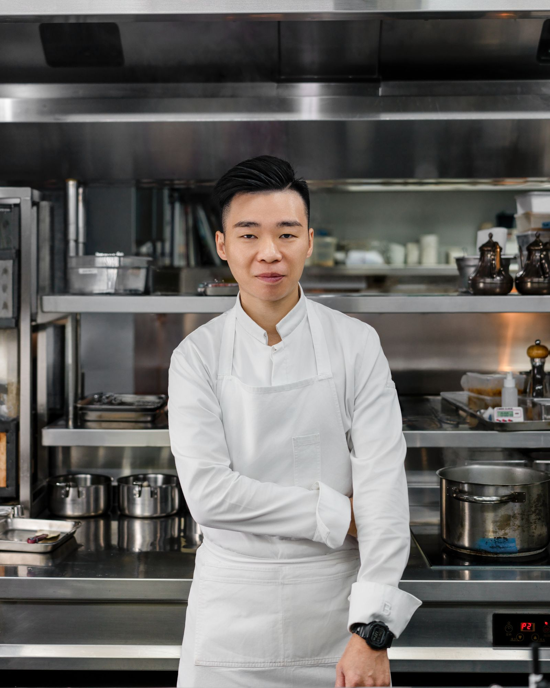

主廚與團隊
古俊基
沉穩自信，細膩用心，讓每一種風味綻放。

做好一次不難。
難的是，每一次都做到最好。
以台灣食材為本，以法式料理技法為底，融入自己的思考與判斷，讓每道創作都有 de nuit 的個性及語言。
出生於香港，歷練於 Amber、Écriture 等餐廳。2022 年榮獲米其林年輕主廚大獎，自 2023 年 4 月起擔任 de nuit 主廚。


主廚與團隊
沉穩自信，細膩用心，讓每一種風味綻放。

以台灣食材為本，以法式料理技法為底，融入自己的思考與判斷，讓每道創作都有 de nuit 的個性及語言。
出生於香港，歷練於 Amber、Écriture 等餐廳。2022 年榮獲米其林年輕主廚大獎，自 2023 年 4 月起擔任 de nuit 主廚。